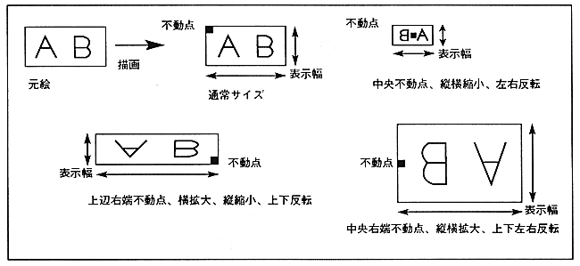

You can draw a rectangular sprite by specifying a fixed point and display width. Specify the fixed point of the character pattern, the drawing coordinates of the fixed point, and the display width for drawing the character pattern.
∙ Fixed point specifies which point of the character pattern is drawn as a fixed point. Select the horizontal direction from the left, center, and right sides, and the vertical direction from the top, center, and bottom sides.
The display width specifies the display width in the X and Y directions. If the character pattern readout direction is specified as vertical flip or horizontal flip, drawing is performed with the character pattern fixed point upside down and horizontally reversed.
描画 The drawing area differs depending on whether it is flipped vertically or horizontally.
Figure 1.4 Rectangular sprite (fixed point specification)
